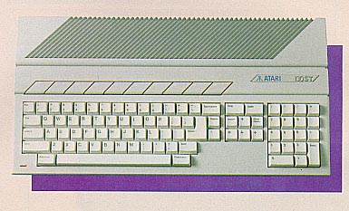

The Atari 130ST Computer System

Only shown at the winter CES
in 1985, the Atari 130ST was to be a 128K RAM version of the popular 520ST
computer system which was released in 1985 by Atari.
The 130ST was canned because Atari felt that the memory space was too limiting
for its new series of 16/32 bit computer systems.